Misión
Poner el conocimiento científico y tecnológico en servicio de la comunidad, afrontando desafíos ambientales, sociales y culturales.
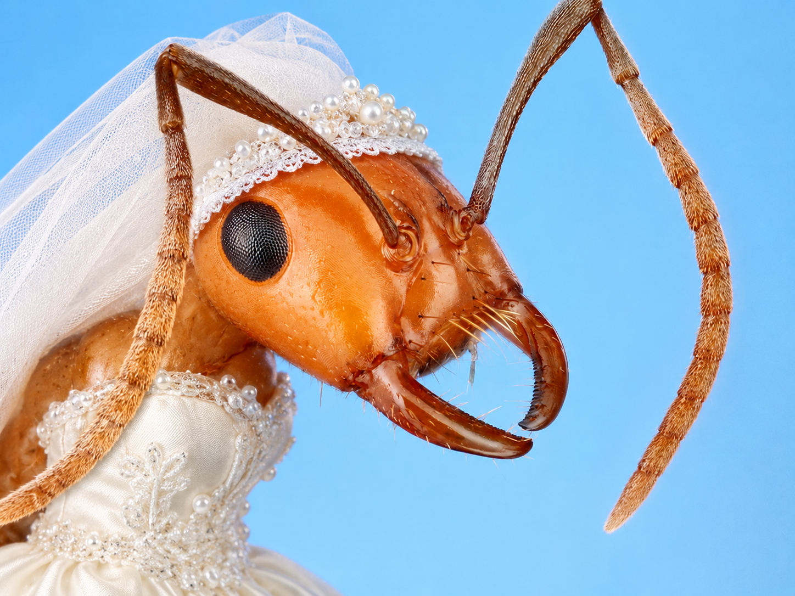
Poner el conocimiento científico y tecnológico en servicio de la comunidad, afrontando desafíos ambientales, sociales y culturales.
Desarrollar soluciones sostenibles a largo plazo con alto impacto en el país y sus comunidades.
Prótesis de mano mioeléctricas: nuestro proyecto ancla une electrónica, manufactura aditiva y diseño centrado en las personas.
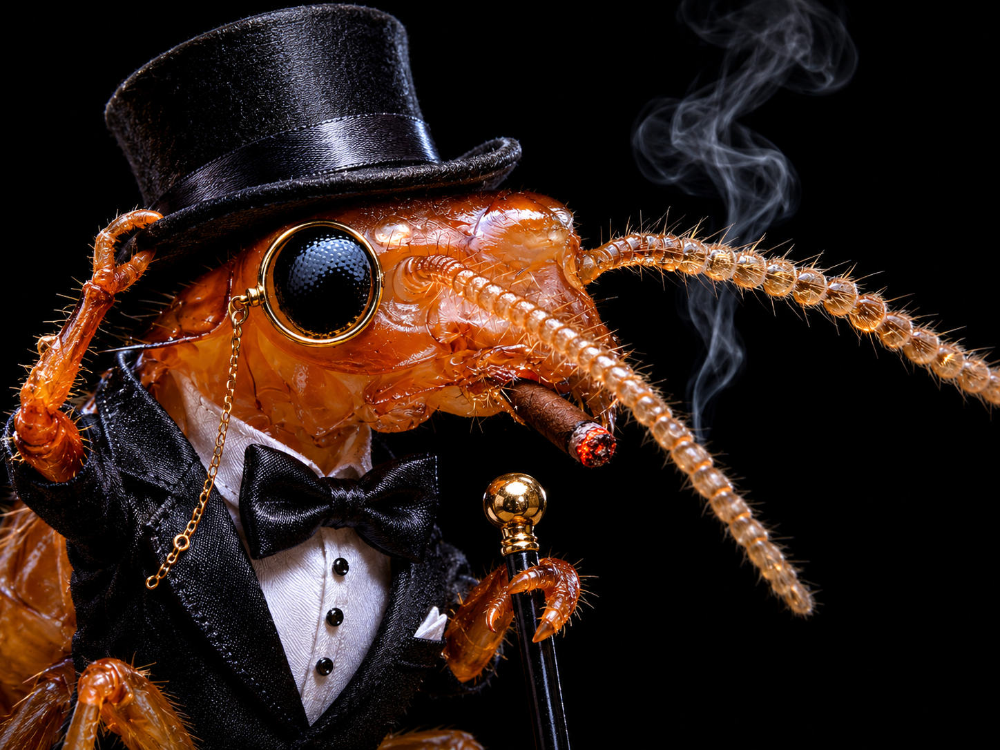
Brinda los componentes electrónicos del proyecto.
El músculo técnico y organizacional del proyecto: quienes hacen que las cosas sucedan y transforman las buenas ideas en un impacto real medible.
Las imágenes de esta sección son referencias temporales de abejas de Wikimedia Commons mientras integramos las fotografías oficiales de cada integrante.

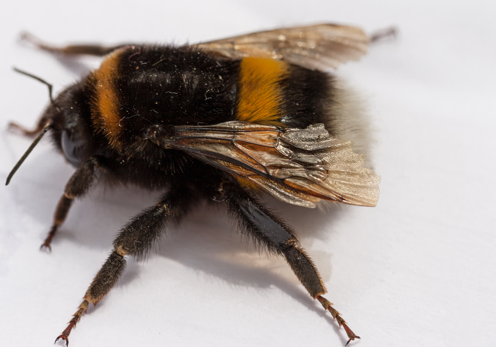
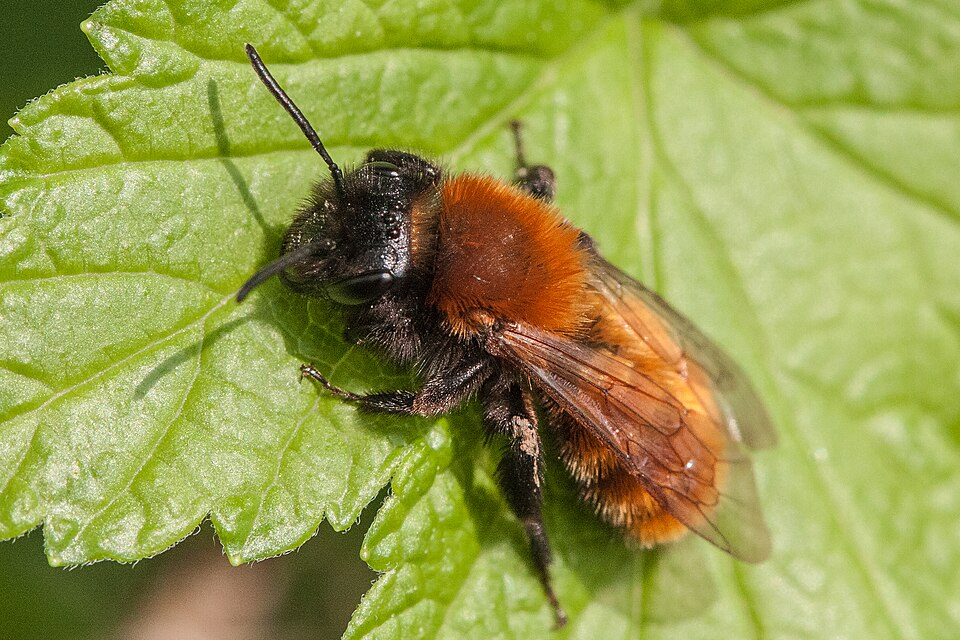
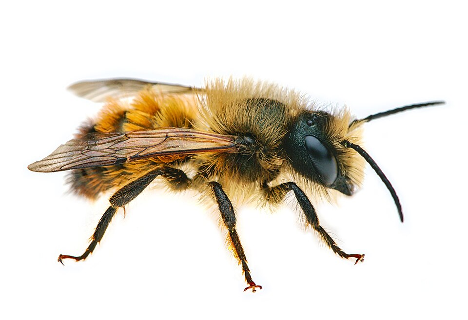
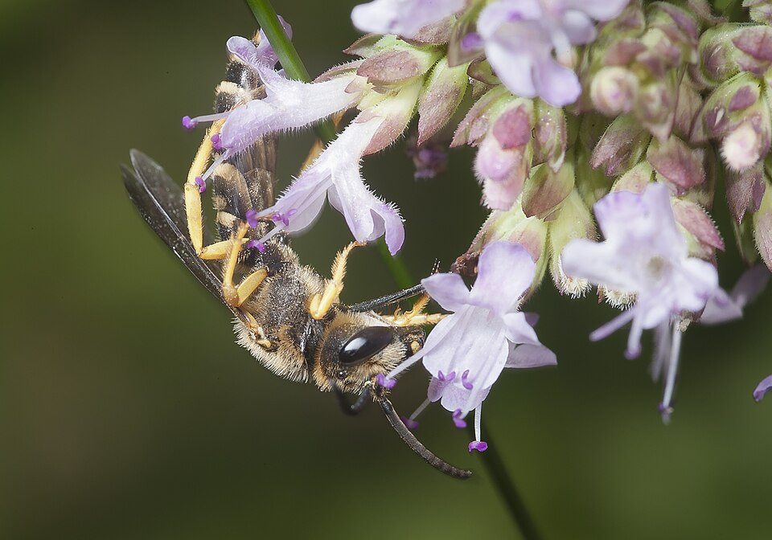


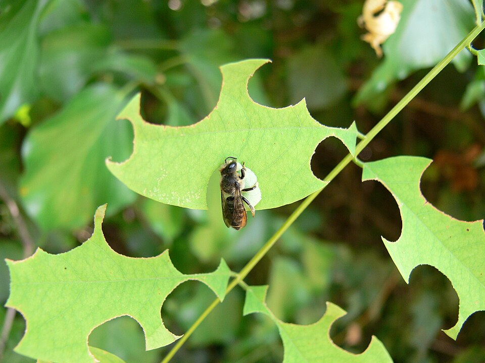
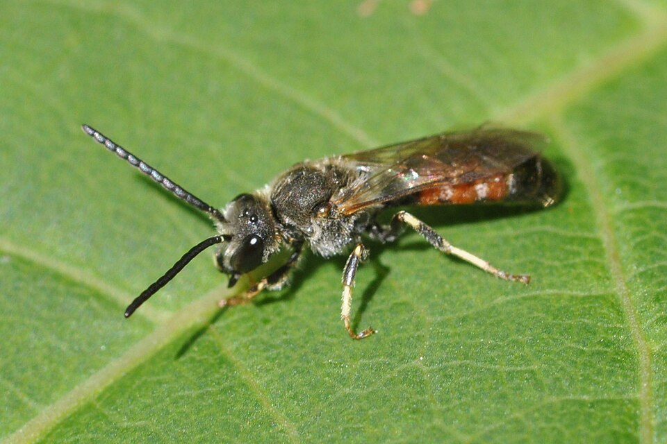

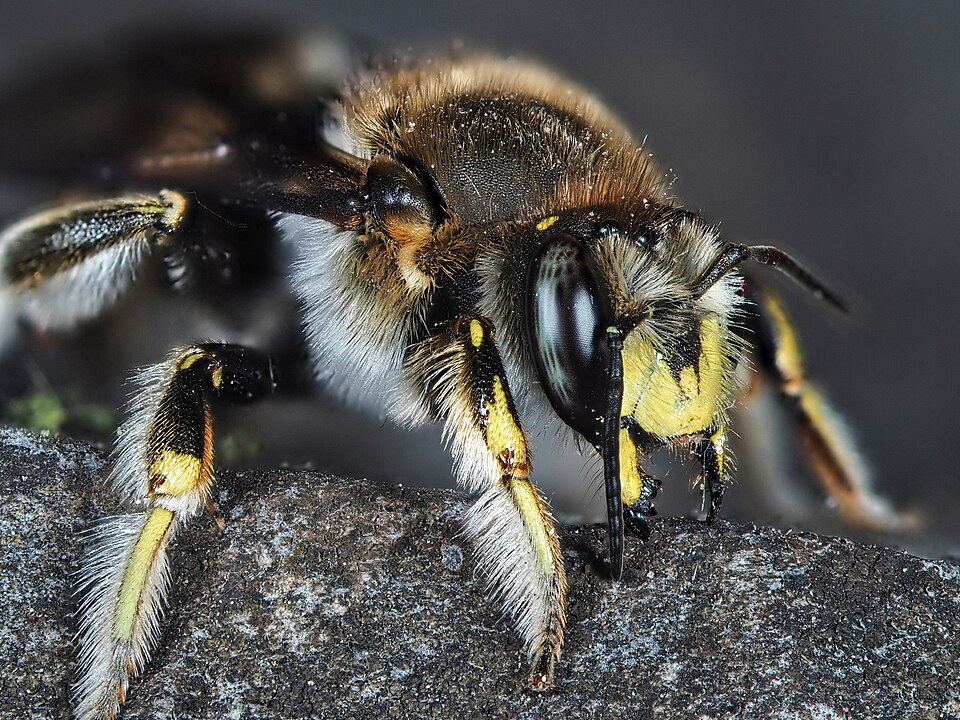
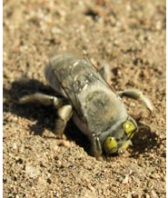
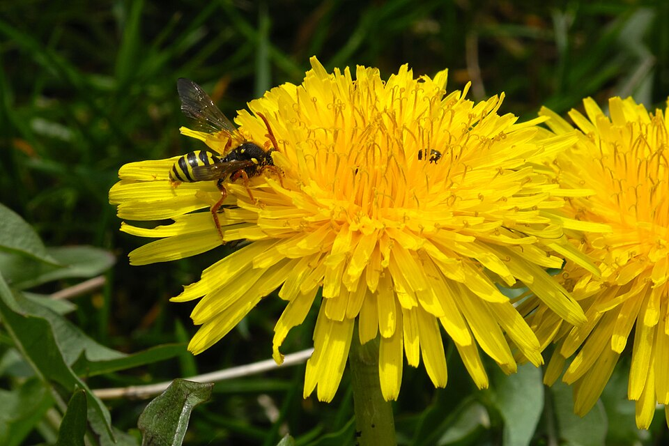
Nuestro segundo proyecto llevará la agricultura a los espacios de la ciudad. ¿Quieres formar parte?
Únete al equipo (formulario disponible próximamente)Tu apoyo hace posible el desarrollo de este ecosistema.
Para donativos porfavor contactar al correo human.stem.org@gmail.com.